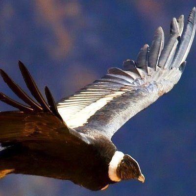
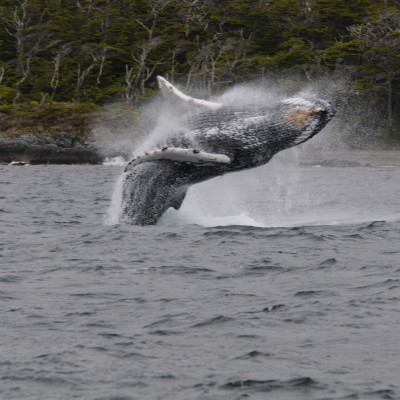
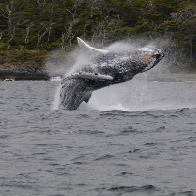
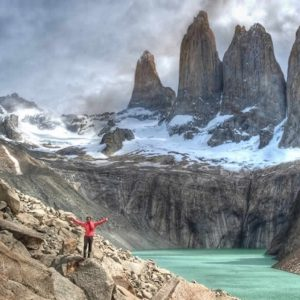
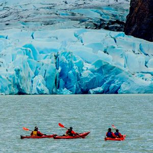
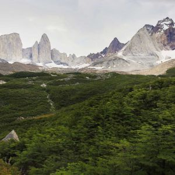
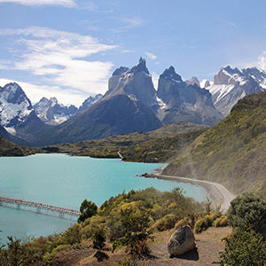

El montañismo nace en los Alpes al final del siglo XVIII. Su objeto es conseguir llegar a la cima de una determinada montaña, como un reto a la naturaleza, que en ocasiones se llega a pagar con la vida. Se trata de la disciplina, en general deportiva o recreativa, que consiste en la realización del ascenso y descenso de montañas. Es también el conjunto de técnicas, conocimientos y habilidades orientadas a la realización de este objetivo. El montañismo no es un simple deporte, pues deriva de una antigua actividad exploratoria del ser humano y como tal cuenta con una historia y tradiciones muy importantes que determinan una ética bien definida (by fair means) que es la parte entre esta disciplina y otras formas de turismo de aventura. Además, quienes lo practican, lo consideran como un verdadero estilo de vida y una forma de experimentar e interpretar el mundo que los rodea.

 

El Parque Nacional Conguillío está ubicado en la Región de la Araucanía, en las Comunas de Curacautín, Lonquimay,
(Provincia de Malleco), Vilcún, Cunco y Melipeuco (Provincia de Cautín).
Fue creada el 26 de Mayo de 1950 mediante Decreto Supremo n.º 1.117 del Ministerio de Tierras y Colonización. Ha sufrido
posteriores modificaciones, por causa de diferentes decretos.
La unidad destaca por la protección de especies de fauna como el puma, la guiña, el carpintero negro, monito del monte,
lagartija café de rayas, ranita de Darwin y tollo de agua dulce. En lo que a flora se refiere: araucaria o pehuén, ciprés
de la cordillera, lleuque, radal enano, canelo andino, entre otras especies.
Trekking de 5 dias para logra hacer el Circuito W, son 1 dias en el camping Grey y Torres para conocer el Glaciar Grey y Lago Turquesa, luego camping de Conaf para ir al Mirador Britanico y por ultimo trekking hasta las Base de las Torres.
   